Early last night, attacks suddenly occurred at several research facilities in D City. These attacks crippled the city. Footage from the scene reveals these crimes were committed by a new species of dinosaurs. The new species of dinosaurs are modern-day descendants of ancient creatures that managed to escape from mass extinction, while evolving to the same level of intelligence and body build as that of Homo Sapiens, they are an intelligent lifeform dubbed 'Dinosauroids' who have inherited the aggressive personality and incredible vitality of their ancient ancestors. The government has named the group behind these attacks "Dinomorphia". Stay tuned as we try to track down their whereabouts.
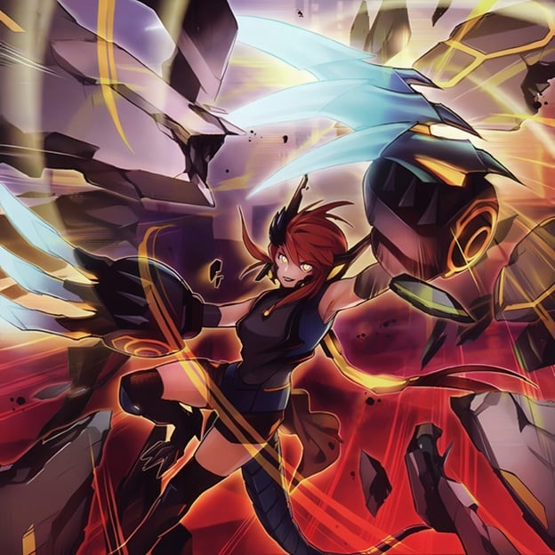
On the left are photos taken by security cameras. It shows what looks to be a fighter jet flying over the city. The "Dinomorphia" are flying this fighter jet, and rapidly approaching the city's major facilities. This is a crime by the fearless, who aren't even trying to hide themselves from state-of-the-art defense equipment.
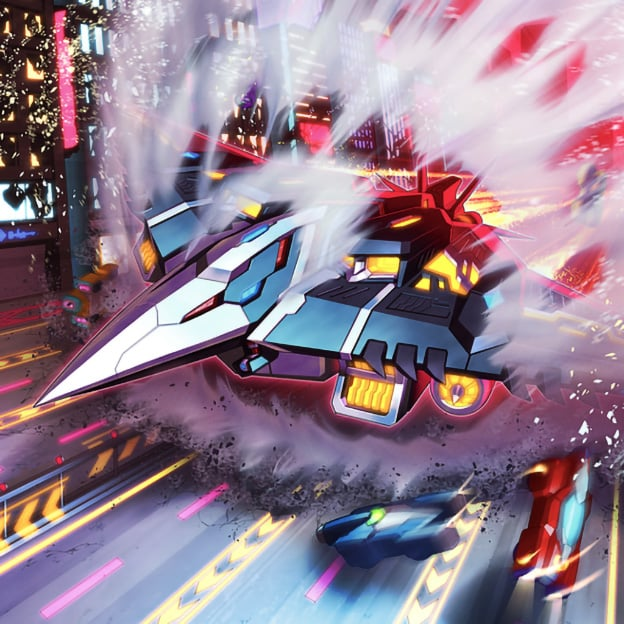
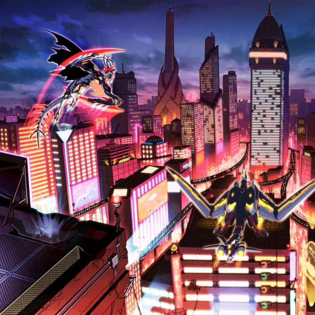
These are photos from the scene of the crime taken by our photographer on location. They have tails and wings they inherited from their ancient ancestors, and the blows they delivered could easily destroy even large military weapons. With our investigation of this incident, it looks like construction of new defense systems are urgently needed.
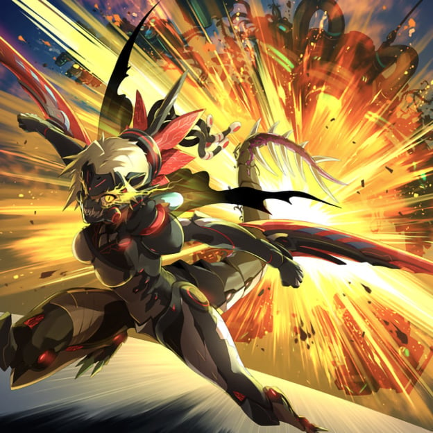
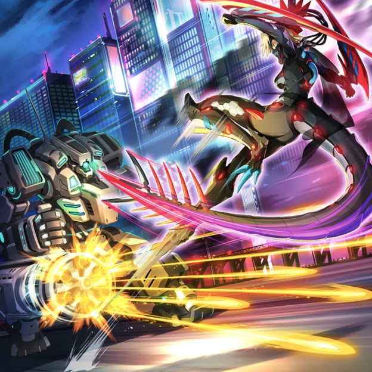
Among the members behind the recent incident are descendants of various ancient lifeforms such as 'Kentrosaurus', 'Therizinosaurus', and 'Diplodocus'. In addition, from what we can see of their equipment, they have incredibly advanced science, as seen from their high-spec suits and fighter jets.
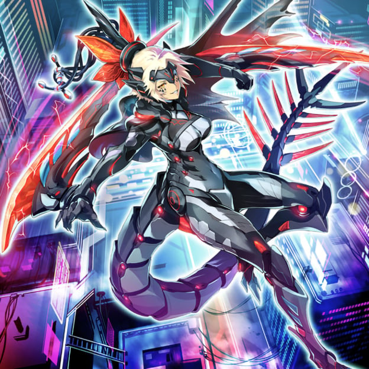
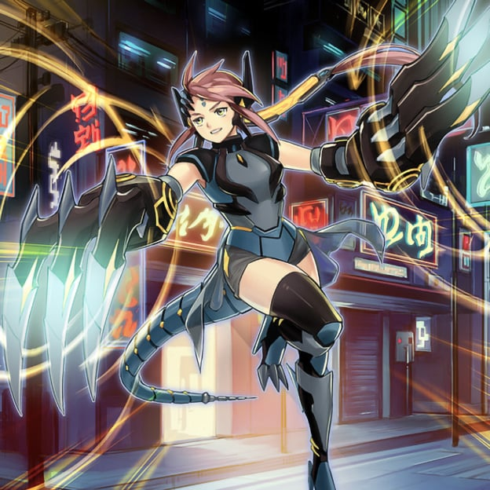
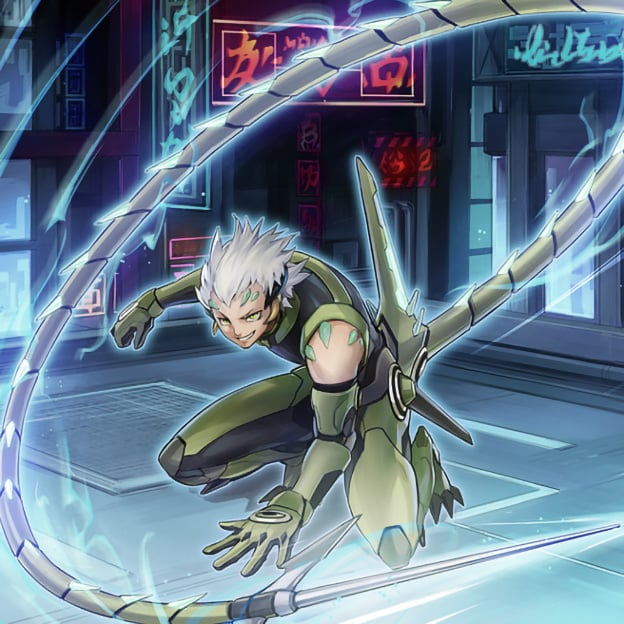
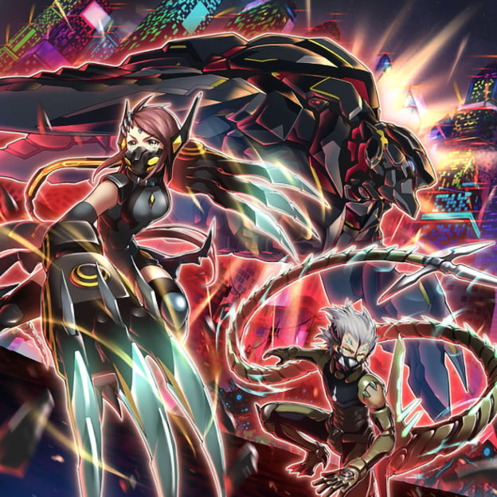
A fighter jet that can disrupt defense systems with high-speed flight and electronic attacks, and a giant mechanical beast with high-power thrusters. Both are capable of autonomous decision making, with no need for a pilot.
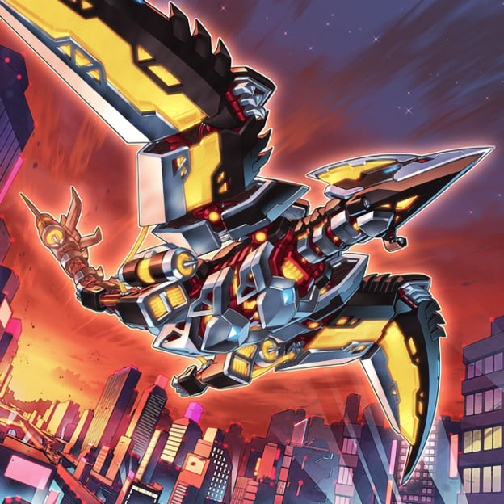
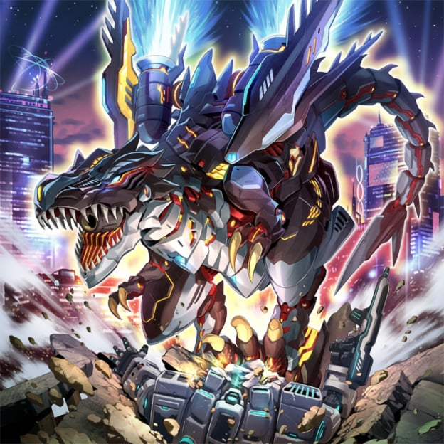
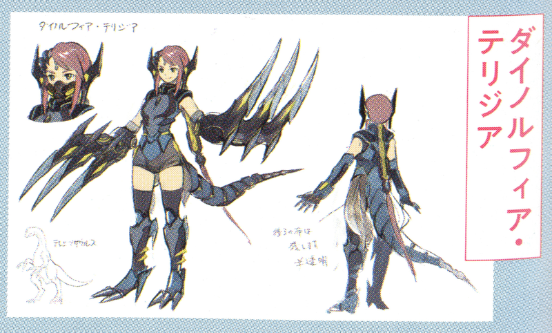
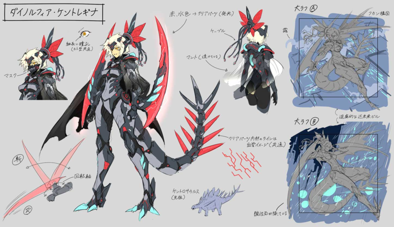